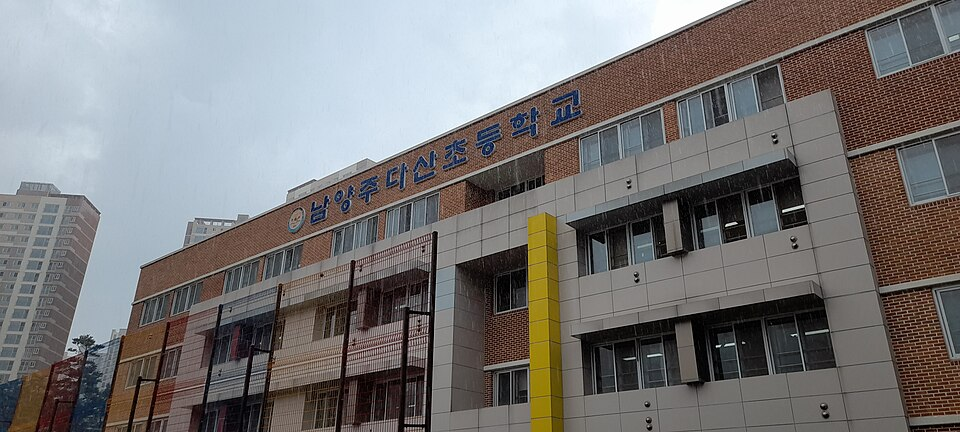

남양주는 신도시와 원도심이 한 시 안에 같이 있는 곳입니다. 다산·별내 신도시의 다산중·다산한강중·다산고, 별내중·별내고는 개교한 지 오래되지 않아 학교마다 시험 스타일이 아직 자리 잡는 중이고, 진접·오남·화도 쪽 진접고·오남고·호평중은 오래된 학교라 기출 경향이 뚜렷합니다. 학원가는 다산·별내에 몰려 있어서, 진접·화도·와부 쪽은 집으로 오는 방문 선생님 수요가 특히 큽니다.
오늘은 남양주에 직접 찾아가는 선생님 중 두 분을 소개합니다. 한 분은 다산동에서 수학과 과학을 함께 보는 10년차 선생님, 한 분은 별내·퇴계원 쪽 미국 6년 거주 영어 선생님입니다.
① 박ㅇ명 선생님 — 수학·과학 함께, 다산동 방문 10년차
박ㅇ명 선생님 남선생님
수학은 초4부터 고3까지 전 학년, 과학은 물리·화학·생명·지구과학 네 과목 모두 가르칩니다. 중학교까지는 수학과 과학을 한 선생님이 같이 봐 주면 두 과목 진도를 맞춰 관리할 수 있어서, 다산중·다산한강중처럼 수행평가가 많은 학교 학생에게 특히 편합니다. 검정고시 준비도 받습니다.
수업 분위기는 부드럽고 편안한 쪽입니다. 학생과 소통을 중요하게 여기고, 시간 약속을 철저히 지키는 선생님입니다. 평일은 저녁, 토요일은 오후에 수업이 열려 있어서 학교·학원 일정이 빡빡한 학생이 시간을 맞추기 좋습니다. 방문은 다산동에 한정되고, 별내·진접 등 다른 동네는 화상으로 같은 수업을 받을 수 있습니다.
박ㅇ명 선생님 상세 프로필 →② 김ㅇ규 선생님 — 영어 초1~고3, 별내·퇴계원 방문
김ㅇ규 선생님 남선생님
미국에서 6년 넘게 살았고 영어특기자로 대학에 들어간 선생님입니다. 내신 영어뿐 아니라 국제학교·국제고·외고 준비생의 회화와 발음 교정까지 다루는 게 다른 점입니다. 초등 저학년은 영어와 친해지는 것부터, 고등은 수행평가와 내신까지 폭이 넓습니다.
스스로 "티칭 70, 코칭 30"이라고 표현합니다. 가르치는 것에 더해 매 수업 후 리포트를 보내고, 숙제·진도·수행평가·단원평가를 챙기며, 기출 자료도 제공합니다. 유머러스하고 친근한 편이라 영어에 거부감이 있는 학생과 관계를 먼저 만드는 데 강합니다. 별내중·별내고·별가람중 학생이 집에서 편하게 받기 좋은 동선입니다.
김ㅇ규 선생님 상세 프로필 →어떤 선생님이 우리 아이에게 맞을까
- 다산동에서 수학과 과학을 한 분에게 맡기고 싶다면 — 박ㅇ명 선생님. 저녁·토요일 오후 수업.
- 별내·퇴계원에서 영어를, 특히 회화·발음까지 잡고 싶다면 — 김ㅇ규 선생님. 수업 리포트로 진행 상황 공유.
- 진접·오남·화도·와부 쪽이거나 국어·다른 과목이 필요하면 남양주 전체 선생님에서 찾아드립니다. 방문 선생님이 10명 있습니다.

남양주 학교별 과외 안내
학교마다 시험 출제 경향과 수행평가 비중이 달라서, 학교별로 준비법을 따로 정리해 두었습니다.
- 다산중학교 과외 · 다산한강중학교 과외 · 다산새봄중학교 과외 · 다산고등학교 과외
- 별내중학교 과외 · 별내고등학교 과외 · 별가람중학교 과외 · 별가람고등학교 과외
- 진접고등학교 과외 · 오남고등학교 과외 · 퇴계원고등학교 과외
- 와부고등학교 과외 · 덕소고등학교 과외 · 호평고등학교 과외 · 동화고등학교 과외
👉 남양주 관리 학교 60곳 전체와 방문 가능 선생님 보기